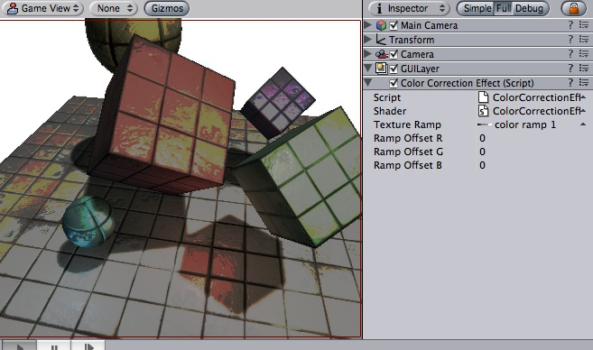

Previous
Previous
Color correction allows you apply arbitrary color correction to your scene as a postprocessing effect (just like the Curves tool in Photoshop or Gimp). This page explains how to setup color correction in Photoshop and then apply exactly the same color correction at runtime in Unity.
Color Correction is only available in Pro version of Unity. Make sure to have the Pro Standard Assets installed.
|  |
Color correction applied to the scene to get strongly posterized look. Color ramp used (magnified) is shown at the right.
Getting color correction from Photoshop into Unity
- Take a screenshot of a typical scene in your game
- Open it in Photoshop and color correct using the Image->Adjustments->Curves
- Save the .acv file file from the dialog using Save...
- Open Pro Standard Assets/Image Based/color correction ramp.png in Photoshop
- Now apply color correction to the ramp image: open Image->Adjustments->Curves again and load your saved .acv file
- Select your camera in Unity and select Component->Image Effects->Color Correction to add color correction effect. Select your modified color ramp.
- Hit Play to see the effect in action!
Details
Color correction works by remapping the original image colors through the color ramp image (sized 256x1):
- result.red = pixel's red value in ramp image at (original.red + RampOffsetR) index
- result.green = pixel's green value in ramp image at (original.green + RampOffsetG) index
- result.blue = pixel's blue value in ramp image at (original.blue + RampOffsetB) index
So for example, to invert the colors in the image you only need to flip the original color ramp horizontally (so that it goes from white to black instead of from black to white).
A simpler version of color remapping that only remaps based on luminance can be achieved with Grayscale image effect.
Tips:
- You need to attach the image effect to the camera while edit mode. To see the effect you have to go into playmode afterwards.
Color correction works only on graphics cards with support for pixel shaders (2.0). E.g. GeForce FX 5200 or Radeon 9500 and up. All image effects automatically disable themselves when they can not run on an end-users graphics card.